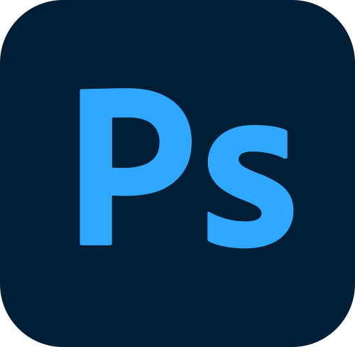
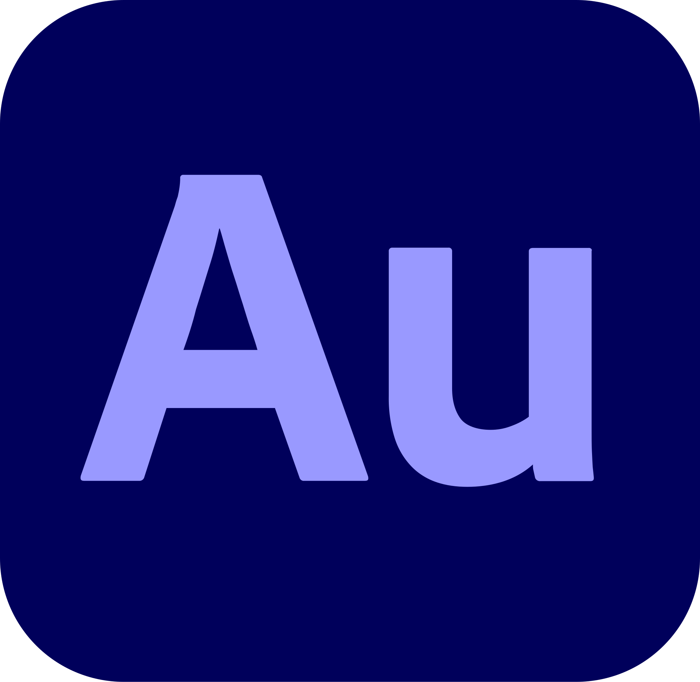
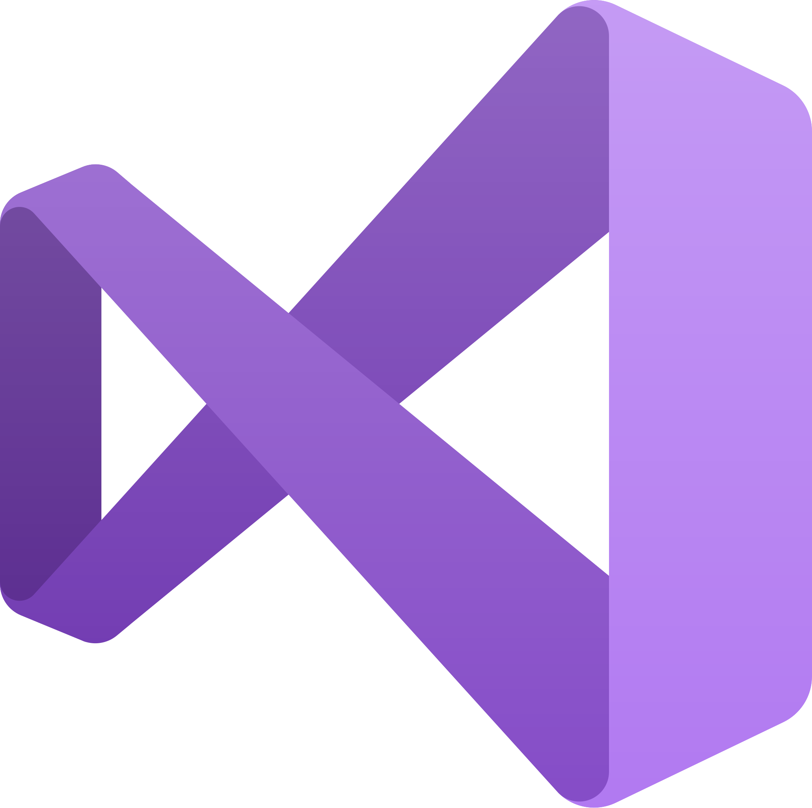
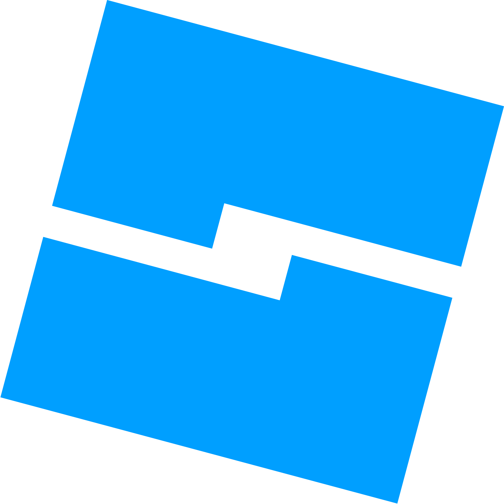

About Me
ahem
First things first, my name is Sudarshan, and my nickname is Sudu. Pretty simple right? No? fine :/
I'm 16 years old, just chillin' through life, trying hard to get better at things I love.
I'm passionate about Graphics Designing, Web Dev, Game Dev, 3D Art, Animation, Music, Photography, Video Editing, Programming, and AI.
And NO, I don't use AI to *create* my work — I just use it to learn faster and smarter. So yeah, before you assume I auto-generated stuff... it's a big NO from me lol.
Here are some applications that I generally use if that's important to you? I don't know.

Adobe Premiere Pro
I use this for editing all of my videos.
I use this for editing all of my videos.

Adobe After Effects
I use this for adding VFX and motion graphics.
I use this for adding VFX and motion graphics.

Adobe Illustrator
I Use it for logo designs and vector art.
I Use it for logo designs and vector art.

Adobe Photoshop
I mainly use it for photo editing, matte painting & posters.
I mainly use it for photo editing, matte painting & posters.

Figma
I use this to design my "imaginary websites", I used it to design this one too!
I use this to design my "imaginary websites", I used it to design this one too!

Adobe Audition
For cleaning and mixing audio tracks, I use it with par of FL studio.
For cleaning and mixing audio tracks, I use it with par of FL studio.
FL Studio
I use this to compose music, even though I'm still learning!
I use this to compose music, even though I'm still learning!

Maya
I use this to create 3D models, environments and stuff, many models in my games were created here.
I use this to create 3D models, environments and stuff, many models in my games were created here.
Blender
I use it with par Maya, as a supplement.
I use it with par Maya, as a supplement.

Visual Studio Code
I use it for web development and small scripts.
I use it for web development and small scripts.

Visual Studio
I use it for advanced development, like unreal engine.
I use it for advanced development, like unreal engine.

Roblox Studio
I use it to create games on Roblox!
I use it to create games on Roblox!
Unreal Engine 5
I mainly use this to create games, and occasionally custom maps for trailers and cinematics.
I mainly use this to create games, and occasionally custom maps for trailers and cinematics.